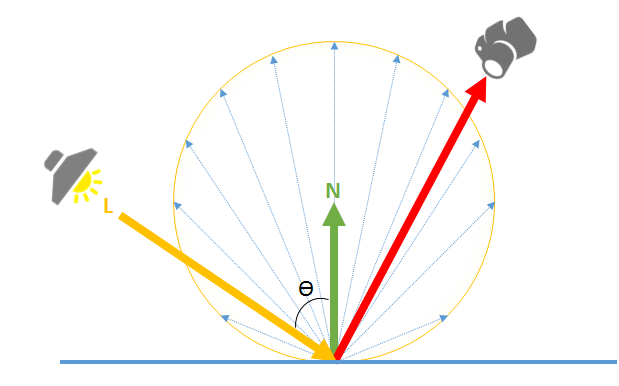
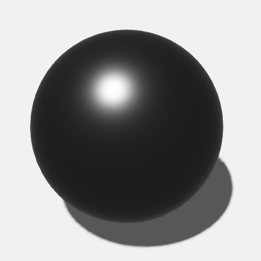

Shading attributes
Warning
Приносим свои извинения за неудобства. Для этой страницы нет перевода на русский язык. Она будет отображаться на английском языке.
Intermediate Artist Programmer
The material shading attributes define the color characteristics of the material and how it reacts to light.
Note
To display a material, you need to select at least one shading model (diffuse, specular or emissive model) in the model attributes.
Diffuse
The diffuse is the basic color of the material. A pure diffuse material is completely non-reflective and "flat" in appearance.

The final diffuse contribution is calculated like this:
the diffuse defines the color used by the diffuse model
the diffuse model defines which shading model is used for rendering the diffuse component (see below)
Currently, the diffuse attribute supports only a diffuse map.
Diffuse model
The diffuse model determines how the diffuse material reacts to light. You can use the Lambert or cel-shading.
Lambert model
Under the Lambert model, light is reflected equally in all directions with an intensity following a cosine angular distribution (angle between the normal and the light):

Note
A pure Lambertian material doesn't exist in reality. A material always has a little specular reflection. This effect is more visible at grazing angles (a mostly diffuse surface becomes shiny at grazing angle).
| Property | Description |
|---|---|
| Diffuse map | The diffuse map color provider |
| Diffuse model | The shading model for diffuse lighting |
Specular
A specular is a point of light reflected in a material.
The specular color can be defined using a metalness map (which uses the diffuse color as a base color), or a specular map (the specular color is defined separately from the diffuse color).
Metalness map
The metalness map simplifies parametrization between the diffuse and specular color.
By taking into into account the fact that almost all materials always have some "metalness"/reflectance in them, using the metalness map provides realistic materials with minimal parametrization.
The final specular color is calculated by mixing a fixed low-reflection color and the diffuse color.
With the metalness color at
0.0, the effective specular color is equal to0.02, while the diffuse color is unchanged. The material is not metal but exhibits some reflectance and is sensitive to the Fresnel effect.With the metalness color at
1.0, the effective specular color is equal to the diffuse color, and the diffuse color is set to0. The material is considered a pure metal.
The screenshots below show the result of the metalness factor on a material with the following attributes:
- Gloss =
0.8 - Diffuse =
#848484, Lambert - Specular GGX
| Pure diffuse (no metalness) | Metalness = 0.0 |
Metalness = 1.0 |
|---|---|---|
 |
 | |
| - The diffuse color is dominant | - The diffuse color is dominant | - The diffuse color isn't visible |
| - The specular color isn't visible | - The specular color is visible (0.02) |
- The specular color is visible |
Specular map
The specular map provides more control over the actual specular color, but requires you to modify the diffuse color accordingly.
Unlike the metalness workflow, this lets you have a different specular color from the diffuse color even in low-reflection scenarios, allowing for materials with special behavior.
Note
You can combine metalness and specular workflows in the same material by adding separate layers.
Specular model
A pure specular surface produces a highlight of a light in a mirror direction. In practice, a broad range of specular materials, not entirely smooth, can reflect light in multiple directions. Stride simulates this using the microfacet model, also known as Cook-Torrance (academic paper).
The microfacet is defined by the following formula, where Rs is the resulting specular reflectance:

| Property | Description |
|---|---|
| Fresnel | Defines the amount of light that is reflected and transmitted. The models supported are: Schlick: An approximation of the Fresnel effect (default) Thin glass: A simulation of light passing through glass None: The material as-is with no Fresnel effect |
| Visibility | Defines the visibility between of the microfacets between (0, 1). Also known as the geometry attenuation - Shadowing and Masking - in the original Cook-Torrance. Stride simplifies the formula to use the visibility term instead:
and
Schlick GGX (default) Implicit: The microsurface is always visible and generates no shadowing or masking Cook-Torrance Kelemen Neumann Smith-Beckmann Smith-GGX correlated Schlick-Beckmann |
| Normal Distribution | Defines how the normal is distributed. The gloss attribute is used by this part of the function to modify the distribution of the normal. GGX (default) Beckmann Blinn-Phong |
| Fresnel | Defines the amount of light that is reflected and transmitted. The models supported are: Schlick: An approximation of the Fresnel effect (default) Thin glass: A simulation of light passing through glass None: The material as-is with no Fresnel effect |
| Visibility | Defines the visibility between of the microfacets between (0, 1). Also known as the geometry attenuation - Shadowing and Masking - in the original Cook-Torrance. Stride simplifies the formula to use the visibility term instead:
and
Schlick GGX (default) Implicit: The microsurface is always visible and generates no shadowing or masking Cook-Torrance Kelemen Neumann Smith-Beckmann Smith-GGX correlated Schlick-Beckmann |
| Normal Distribution | Defines how the normal is distributed. The gloss attribute is used by this part of the function to modify the distribution of the normal. GGX (default) Beckmann Blinn-Phong |
| Fresnel | Defines the amount of light that is reflected and transmitted. The models supported are:
|
| Visibility | Defines the visibility between of the microfacets between (0, 1). Also known as the geometry attenuation - Shadowing and Masking - in the original Cook-Torrance. Stride simplifies the formula to use the visibility term instead:
|
| Normal Distribution |
|

Emissive
An emissive material is a surface that emits light.
With HDR, a Bloom and a Bright filter post-processing effects, we can see the influence of an emissive material:

| Property | Description |
|---|---|
| Emissive map | The emissive map color provider |
| Intensity | The factor to multiply by the color of the color provider |
| Use alpha | Use the alpha of the emissive map as the main alpha color of the material (instead of using the alpha of the diffuse map by default) |